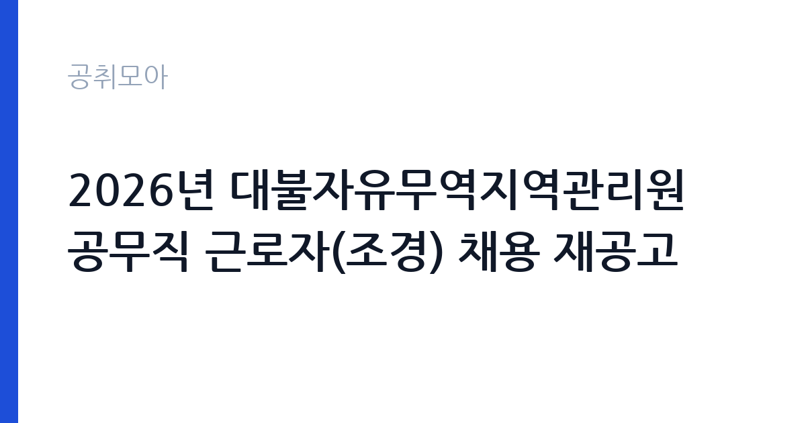

[국가기관] 2026년 대불자유무역지역관리원 공무직 근로자(조경) 채용 재공고
산업통상부 대불자유무역지역관리원 · 전남 · 마감 2026-11-02 (D-11) · 출처 나라일터

한눈에 보는 모집 조건
| 기관 | 산업통상부 대불자유무역지역관리원 |
|---|---|
| 공고명 | 2026년 대불자유무역지역관리원 공무직 근로자(조경) 채용 재공고 |
| 고용형태 | 공무직 |
| 근무지 | 전남 |
| 게시일 | 2026-10-22 |
| 마감일 | 2026-11-02 (D-11) |
지원자격, 이렇게 읽으세요
- 공무직 근로자(조경) 1명
- 접수 ~2026-11-02 마감
- 세부 조건은 원문 공고문 확인
공무직 근로자는 공무원이 아니라 근로기준법이 적용되는 근로자이지만 기간의 정함이 없는 무기계약으로 채용되는 경우가 많아 정년까지 근무가 가능합니다. 채용은 공무원 시험과 달리 기관의 자체 전형으로 진행되고 인사 규정과 임금표를 적용받습니다. 이번 공고는 산업통상부 대불자유무역지역관리원에서 직접 진행하는 자체 전형으로, 응시자격과 제출서류는 공고문에 항목별로 제시됩니다. 조경 직무는 관련 자격이나 경력을 우대합니다. 조경기능사, 수목치료기술자, 원예 관련 자격이 있으면 유리합니다. 장비 운용 경험과 운전면허 소지 여부도 자주 확인하는 항목입니다. 동절기 한시 채용은 근무 기간이 짧고 야외 작업 비중이 높습니다. 건강 상태와 현장 근무 가능 여부가 실질적인 조건입니다. 서류는 접수 마감 이후 보완이 되지 않으므로 자격 요건과 증빙 서류를 마감 전에 모두 갖춰야 합니다. 공고문에 명시된 우대 사항은 해당 여부를 확인해 증빙을 첨부해야 가점이 반영됩니다. 응시 자격 판단이 애매하다면 접수 전에 채용 담당 부서로 문의하는 편이 안전합니다. 서류 제출 후에는 소명 기회가 없습니다.
이 공고의 포인트
이 공고의 첫 번째 포인트는 고용 형태입니다. 무기계약으로 채용되면 정년까지 근무가 가능해 재계약 부담이 없습니다. 반대로 기간제로 채용되는 공고라면 계약 기간을 먼저 확인해야 합니다. 두 번째는 업무 범위가 명확하다는 점입니다. 조경·수목 관리 직무로 채용되므로 배치 이후 담당 업무가 크게 흔들리지 않습니다. 세 번째는 근무지입니다. 전남 지역 근무로 수도권 공고에 비해 지원자 분포가 넓지 않아 상대적으로 경쟁이 분산되는 경우가 있습니다. 모집 인원이 적은 만큼 지원자 한 명 한 명의 서류 완성도가 당락에 크게 작용합니다. 다만 선발 인원이 1명으로 많지 않아 자격을 갖춘 지원자가 몰리면 경쟁률이 높아질 수 있습니다.
전형은 어떻게 진행되나
전형은 서류심사와 면접심사를 기본으로 하고 직무에 따라 필기나 실기, 체력검정이 추가됩니다. 서류 단계에서는 응시자격 충족 여부와 제출서류 형식을 확인하며 이 단계에서 탈락하는 지원자가 적지 않습니다. 면접은 직무 이해도와 경험을 확인하는 방식으로 진행되고 발표는 개별 통보나 홈페이지 게시로 이뤄집니다. 최종합격 이후에는 결격사유 조회와 채용 신체검사가 이어지며 이 절차에서 문제가 확인되면 합격이 취소될 수 있습니다. 구체적인 전형 단계와 배점은 공고문에 표로 정리되어 있으니 원문을 기준으로 준비하십시오. 전형 일정이 공고문에 날짜로 명시되어 있으니 달력에 옮겨 두고 준비하십시오.
원문에서 확인한 전형 방식
대불자유무역지역관리원 공무직 근로자 채용을 붙임과 같이 공고합니다. ○ 모집분야: 조경 ○ 고용형태: 공무직근로자 ○ 근무예정지: 산업통상부 대불자유무역지역관리원(전남광주통합특별시 영암군 삼호읍 자유무역로 205) ○ 접수기간: 2026년 10월 28일 ~ 2026년 11월 2일 18:00까지 ○ 응시방법: 방문 및 우편 접수 ○ 문의처: 061-464-0745 ※ 상세내용은 붙임의 공고문을 참고하시기 바랍니다.
이런 분께 추천해요
- 조경·수목 관리 경력이나 관련 자격이 있는 분
- 야외 작업과 장비 운용에 익숙한 분
- 계절별 작업 일정에 맞춰 근무할 수 있는 분
지원 전 체크리스트
- 응시자격 요건과 경력 기준을 충족하는가 — 경력은 증명서로 입증해야 합니다
- 무기계약 여부와 정년 기준을 공고문에서 확인했는가
- 제출서류 목록을 모두 준비했는가 — 누락 시 서류 단계에서 탈락합니다
- 접수 마감 2026-11-02 이전에 접수 방식을 확인해 제출했는가
모집 일정과 제출 타이밍
공고 게시일은 2026-10-22, 접수 마감은 2026-11-02입니다. 준비 기간은 약 11일로 서류 준비와 자격 증빙을 함께 처리하기에는 넉넉하지 않은 편입니다. 첫 이틀 안에 공고문과 첨부 서식을 내려받아 요건을 확인하고 남은 기간에 증빙 서류를 발급받는 일정이 현실적입니다. 면접은 서류 합격자 발표 후 짧은 간격으로 진행되는 경우가 많으므로 서류 제출과 동시에 면접 준비를 시작하는 편이 안전합니다. 마감일에는 접수 시스템이 몰리므로 하루 전까지 제출을 마치는 것이 좋습니다. 제출 서류는 공고문에 적힌 순서대로 정리하면 담당자가 확인하기 쉬워 누락이 줄어듭니다. 전남 근무지는 도서·산간 지역이 포함될 수 있어 근무지 세부 주소를 반드시 확인하십시오. 마감까지 2주 안팎이 있어 준비할 시간은 있지만 미루면 촉박해집니다. 선발 인원이 한두 명 수준이라 지원자 개개인의 서류 완성도가 그대로 평가에 반영됩니다.
직무 이해하기: 국가기관
이 기관은 공공 서비스 제공을 목적으로 설립된 공공기관으로, 채용 공고에 따라 부서별 실무 인력을 선발합니다. 기관의 사업 범위와 조직 구성은 홈페이지에서 확인할 수 있으며 채용 절차는 자체 인사 규정을 따릅니다. 조경 업무는 수목과 화단, 잔디를 관리해 시설 경관을 유지하는 일입니다. 계절에 따라 전정과 가지치기, 제초, 관수, 병해충 방제 작업이 이어집니다. 동절기에는 월동 준비와 방한 조치, 하절기에는 잡초 제거와 병해충 대응이 중심이 됩니다. 예초기와 전정기 같은 장비를 사용하므로 안전 장비 착용이 필수입니다. 야외 작업이 대부분이라 날씨에 따라 작업 일정이 조정됩니다. 업무는 혼자 처리하기보다 부서 단위로 나눠 진행되므로 담당 구역과 협업 범위를 입사 초에 확인하는 것이 중요합니다. 현장 업무와 사무 업무의 비중은 기관의 사업 일정에 따라 계절별로 달라집니다.
자기소개서 작성 팁
조경 지원서는 실제로 다뤄본 수목과 작업 종류를 구체적으로 쓰는 것이 효과적입니다. 관리한 면적이나 수목 수, 수행한 작업 주기를 수치로 제시하십시오. 장비 운용 능력과 안전 수칙 준수는 반드시 언급해야 합니다. 계절별 작업 계획을 세워본 경험이 있다면 강점이 됩니다. 문항별 글자 수 제한을 먼저 확인하고, 각 문항의 첫 문장에 결론을 배치하는 방식이 읽기 쉽습니다. 지원 동기는 기관의 어떤 사업에 기여하겠다는 한 문장으로 시작하고, 이어서 본인의 경험을 근거로 붙이십시오. 감점을 피하려면 다른 기관에 보낼 수 있는 범용 문장을 그대로 쓰지 않는 것이 중요합니다. 기관 이름과 사업명이 문장 안에 자연스럽게 들어가야 준비도가 드러납니다.
면접 준비 포인트
면접에서는 수목 관리 지식과 안전 의식을 확인합니다. 병해충이 발견됐을 때 어떻게 판단하고 조치할지, 예초 작업 중 안전사고를 어떻게 예방하는지 묻습니다. 계절별 작업 주기를 알고 있는지도 평가 요소입니다. 야외 작업과 장비 사용 경험을 구체적으로 답하십시오. 답변은 상황, 판단, 조치의 순서로 정리하면 전달이 분명해집니다. 모르는 질문에는 모른다고 밝히고 확인 방법을 제시하는 편이 억지 답변보다 낫습니다. 마지막에는 근무 의사와 함께 2026-11-02 이후 일정에 언제든 응할 수 있다는 점을 전달하십시오. 본인 경험을 말할 때는 기간, 역할, 결과를 순서대로 정리해 두면 질문이 바뀌어도 활용할 수 있습니다.
급여·근무조건 읽는 법
조경 직무의 보수는 기간제 근로자 임금 기준에 따라 월급 또는 일급으로 지급되며, 동절기 한시 채용은 근무 개월 수가 짧습니다. 2026년 최저임금은 시급 10,320원, 월 환산 2,156,880원이므로 이를 기준으로 최소 수준을 가늠할 수 있습니다. 작업복과 장비 지급 여부, 식사 제공 여부도 총보상에 영향을 줍니다. 구체적인 금액과 근무 기간은 공고문에서 확인하십시오. 2026년 적용 최저임금은 시급 10,320원, 월 환산 2,156,880원(주 40시간·209시간 기준)입니다. 고용노동부 고시 제2025-47호로 확정된 금액입니다. 보수는 보통 기본급, 각종 수당, 상여로 나뉘어 지급됩니다. 기본급만 보면 적어 보여도 정액급식비와 명절휴가비, 복지포인트가 붙으면 실제 총액이 달라지므로 항목별로 확인해야 합니다. 4대 보험과 퇴직급여 적용 여부도 함께 보십시오. 기간제는 계약 기간이 짧아 월 급여가 높아도 연간 총액은 적을 수 있습니다.
자주 묻는 질문
- 선발 인원은 몇 명인가요?
공고문 기준 1명입니다. 직종별로 인원이 나뉘는 경우가 있으니 모집분야 항목을 함께 확인하십시오. - 근무지는 어디인가요?
전남 지역의 산업통상부 대불자유무역지역관리원 소속 근무지입니다. 세부 주소와 출퇴근 조건은 원문 공고문에서 확인할 수 있습니다. - 보수는 얼마인가요?
채용 신분(공무직)과 기관 임금 규정에 따라 정해지며 구체적인 금액은 공고문 처우 항목에 제시됩니다. 금액이 공개되지 않은 경우에는 원문의 보수표를 확인하십시오.
함께 보면 좋은 공고
[국가기관] 서울경찰청 3기동단 공무직 무기직(시설관리)근로자 채용 공고 — 마감 2026-11-02[국가기관] 2026년 통일부 전산주사보(일반임기제) 경력경쟁채용 공고 — 마감 2026-11-02[국가기관] 2026년 하반기 공무직 및 기간제 근로자 채용 공고문 — 마감 2026-11-03출처: 나라일터 공개정보를 바탕으로 공취모아가 정리한 안내글입니다. 모집 조건·일정은 변경될 수 있으니 지원 전 반드시 원문 공고문을 확인하세요. 본 글은 정보 제공용이며 합격을 보장하지 않습니다.